Cerinte de interfata externa
Interfete Utilizator
Home Page
HomePage-ul reprezintă prima interacțiune a utilizatorului cu aplicația ”WhaF”. Display-ul conține o bară de navigare(ce ulterior va fi prezentă și pe restul paginilor asociate) având următoarele funcționalități :
- HELP – buton ce conduce utilizatorul către pagina de ”Frequently Asked Questions”
- SEE MOST POPULAR – buton ce conduce utilizatorul către pagina cu același nume
- GET STARTED – butonul care oferă utilizatorului principala funcționalitate a aplicației : căutarea de rețete pe baza unor ingrediente
- JOIN US – butonul ce conduce utilizatorul către formularul de Sign In/ Sign Up pentru autentificarea în cadrul aplicației,respectiv, înregistrarea la aceasta
- PICK INGREDIENTS este un buton interactiv care are aceeași funcționalitate cu cea a opțiunii ”GET STARTED” . Cel din urmă este prezent de mai multe ori în cadrul paginii de Home,pentru a-i oferi utilizatorului posibilitatea de căutare de ingrediente din mai multe părți
Help Page - Frequently asked questions
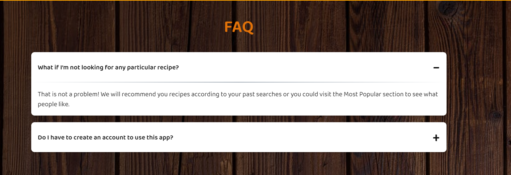 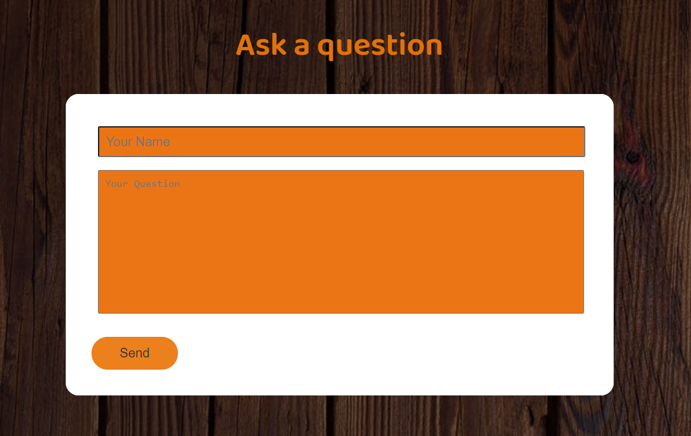- In sectiunea de FAQ, utilizatorul poate sa vizualizeze intrebarile si raspunsurile corespunzatoaredeja existente
- Mai apoi, acesta poate sa incarce propriile sale intrebari prin completarea unui camp cu numele sau si altul cu intrebarea propriu zisa
See Most Popular
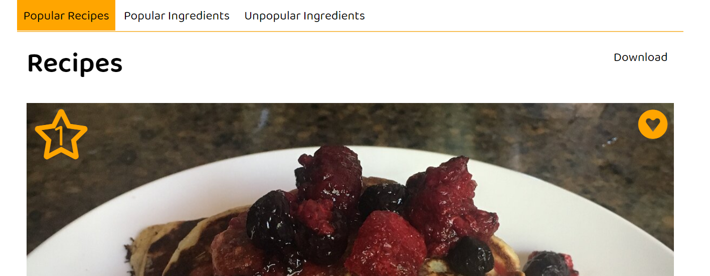Aceasta pagina poate fi accesata de orice utilizator. Aici este posibil sa:
- Vezi retetele/ ingredientele populare si ingredientele nepopulare
- Descarci clasamentul in format HTML, CSV, si JSON
- Adaugi o reteta la favorite (inimioara)
Search
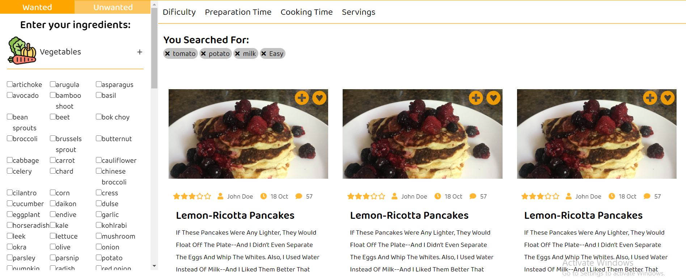Pentru a cauta o reteta un utilizator poate:
- Sa selecteze ingredientele pe care le vrea (Wanted) si pe care nu (Unwanted) din Side Bar. Pentru o filtrare mai complexa el poate selecta nivelul de dificulatate, timpul de preparare, timpul de gatire si numarul de portii.
- Sa elimine niste criterii adaugate anterior facand click pe x de pe tag.
In partea de main apar retetele ce se potrivesc cautarii, utilizatorul poate:
- Sa adauge reteta la favorite (inimioara)
- Sa adauge o poza cu reteta si sa o marcheze ca preparate(plus)
- Sa acceseze pagina retetei (Read more)
Recipe
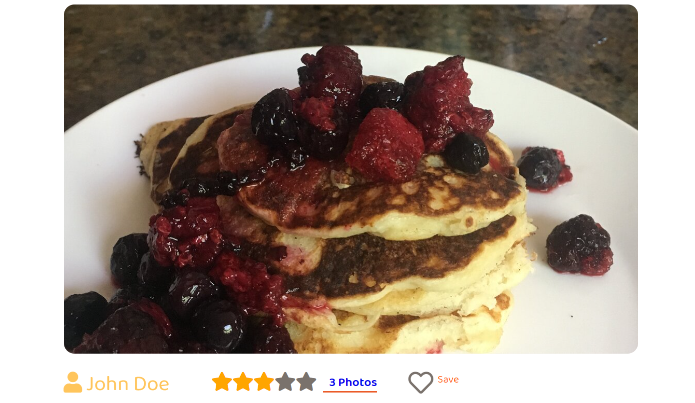Atunci cand utilizatorul acceseaza pagina de profil a unei retete, acesta are acces la urmatoarete functionalitati:
- Poate accesa pagina de profil a persoanei care a incarcat reteta
- Poate marca o reteta ca si “salvata” pentru a avea acces ulterior la ea din sectiunea de retete salvate
- Sectiunea de review care indica si numarul de poze incarcare cu rezultatul retetei face trimite catre sectiunea de galerie unde se afla toate imaginile incarcare de utilizatori
In sectiunea de galerie, utilizatorul poate vizualiza numele persoanei care a incarcat poza, precum si o scurta descriere sau recenzie asupra rezultatului.
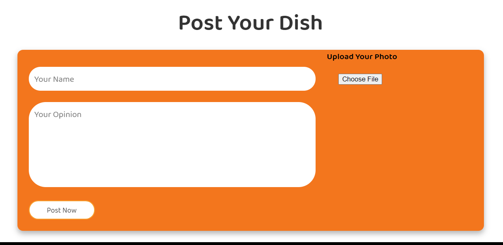In aceasta sectiune, utilizatorul poate incarca o poza cu rezultatul final al retetei, introducand numele si o scurta descriere. Acesta selecteaza poza de pe propriul dispozitiv.
Log In and Register

- Este accesibilă utilizatorului prin intermediul butonului JOIN US din bara de navigare și conține un formular de logare în cazul în care utilizatorul are deja un cont creat, respecitv un formular de înregistrare în caz contrar
- Utilizatorul se va putea loga și prin intermediul altor platforme sociale asociate
- Butonul ”Sign In” redirecționează utilizatorul către pagina sa de profil
- Butonul ”Sign Up” redirecționează utilizatorul către pagina de setări a profilului pentru a realiza diverse alte modificări
Profile
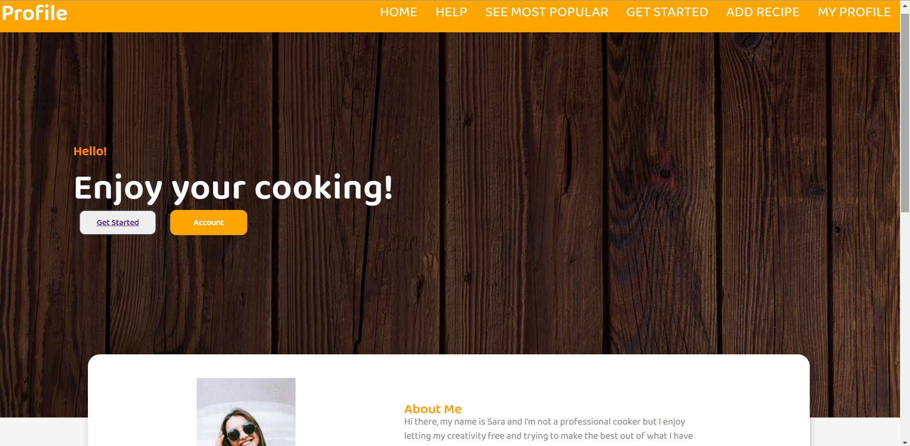 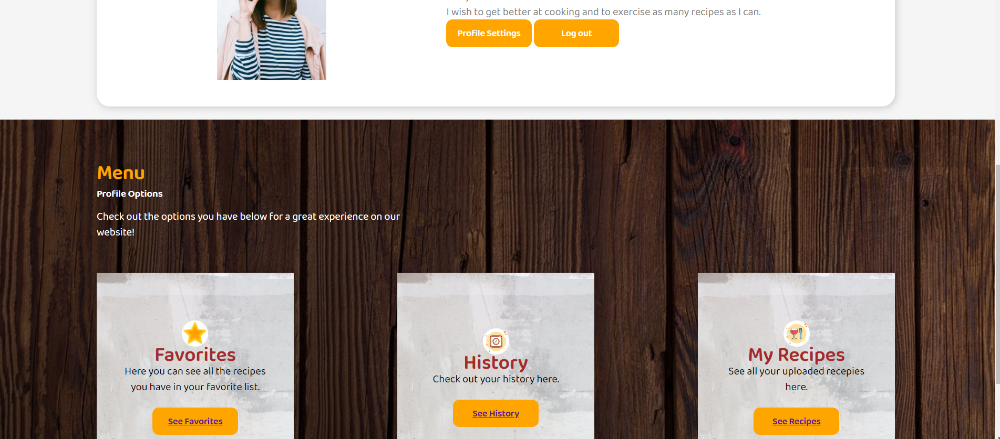- Odată ce utilizatorul își accesează contul și implicit profilul, acesta va avea în plus posibilitatea de adăugare a unei rețete proprii pe baza unui formular indicat prin butonul ADD RECIPE
- PROFILE SETTINGS – butonul oferă utilizatorului posibilitatea de a-și modifica setările privind informațiile despre contul său
- LOG OUT – se realizează delogarea din aplicație
- SEE FAVORITES – oferă posibilitatea de a-ți vizualiza o listă cu rețete salvate la favorite
- SEE HISTORY – ofera posibilitatea de a-ți vizualiza istoricul activității tale în cadrul aplicației
- SEE RECIPES - oferă posibilitatea de a accesa o secțiune în care vor fi salvate rețetele pe care utilizatorul le încarcă în aplicație
Add Recipe
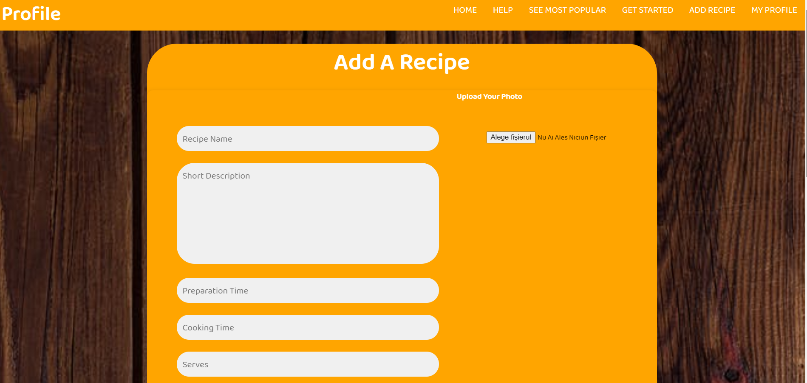 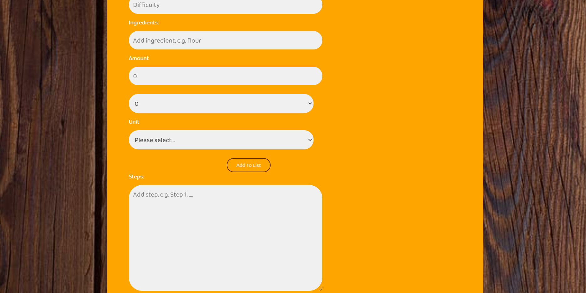 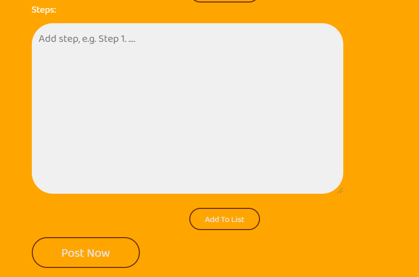- Un utilizator poate incarca o reteta proprie, completand campurile aferente cu diferite informatii precum, nume, descriere, timp preparare etc.
- De asemenea este obligatoriu de incarcat una sau mai multe poze cu produsul.
- Lista de ingrediente si de pasi de prepapare va fi realizata prin adaugarea acestora prin intermediul butonului Add To List
- Reteta va fi incarcata prin intermediul butonului Post Now
Favorites
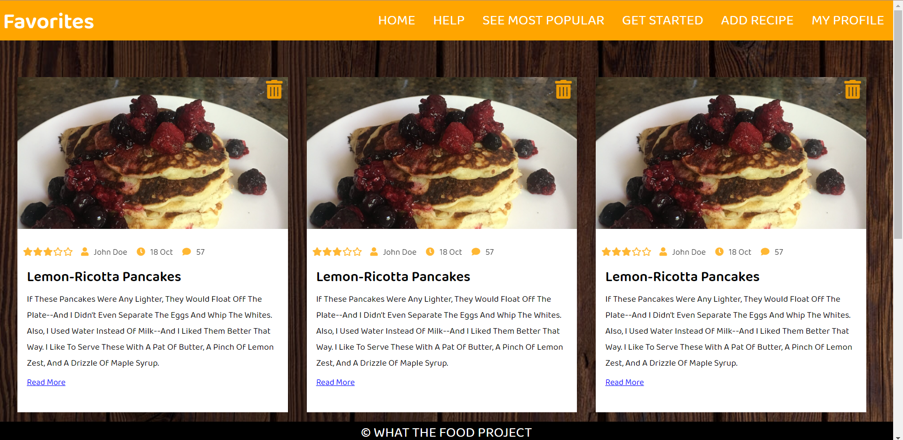Pagina de favorite :
- Reprezintă strict o listă de rețete pe care utilizatorul le-a salvat pentru vizualizare ulterioară, având posibilitatea de a le elimina în orice moment din această listă
- Opțiunea de ”Read More” îl va conduce pe acesta către pagina rețetei respective.
History
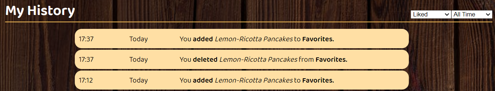Aceasta pagina poate fi accesata de un utilizator logat. Aici un utilizatorul poate:
- Sa vada data si ora cand a realizat o anumita operatie
- Sa filtreze istoricul in dependenta de operatie (Liked, Delted, Added, Completed, Searches)
- Sa filtreze istoricul in dependenta de cad a fost realizata operatia, ii sunt accesibile informatiile pana la o luna in urma.
My Recipes

Aceasta pagina poate fi accesata de un utilizator logat. Aici un utilizatorul poate:
- Similar paginii de Favorite, o serie de rețete pe care utilizatorul le încarcă în cadrul aplicației și care devin disponibile și pentru ceilalți utilizatori.
- Butonul de ”See Recipe” va conține un link ce conduce către pagina rețetei respective.
Caracteristicile sistemului
- Posibiliatea de creare a unui cont este una dintre caracteristicile principale ale sistemului, întrucât oferă utilizatorului funcționalități în plus (opțiunea de adăugare rețetă,o listă de favorite, vizualizarea unui istoric etc.) . Informațiile despre un utilizator care își crează cont sunt salvate într-un server de baze de date, în timp ce preferințele ultimei căutări ale unui utilizator neautentificat sunt salvate la nivel de browser . Prin înregistrarea în aplicație a unei persoane, se populează respectiva bază de date cu noi date.
- În cadrul paginii de profil a unui utilizator, modificarea setărilor contului va duce la modificarea anumitor date din serverul de baze de date.
- Cautare de retete : Aceasta functionalitate are o prioritate maxima, reprezentand esenta aplicatiei. Utilizatorul (logat sau nelogat) poate selecta ingredientele pe care le doreste si cele care ii displac, nivelul de dificultate, timpul de pregatire si gatire a mancarii si numarul de portii. Va fi folosit un algoritm de cautare cat mai eficient pentru a-I oferi utilizatorului retete care minimizeaza numarul de ingrediente suplimentare necesare(TBD). Pentru ca aplicatia sa functioneze cat mai rapid va fi folosit Ajax, astfel, nu se va reincarca pagina din nou, ci doar se vor adauga sau sterge retetele noi ce indeplinesc criteriile adaugate treptat. Daca un utilizator nu este logat, preferintele ultimei cautari vor fi salvate la nivel de browser, cu ajutorul cookies-urilor. Daca el este logat acestea vor fi salvate in istoricul lui.
- Istoric : Aceasta functionalitate are o prioritate medie, deoarece ii va permite utilizatorului logat sa se reintoarca la cautarile recente pentru a replica o cautare dorita. Aceasta optiune este doar pentru un utilizator ce are deja cont. De asemenea, el va putea vedea alte operatii pe care le-a facut ca si adaugarea unor retete la Favorite, stergerea ei, adaugarea unei retete noi si completarea unei retete. El va avea optiunea sa le filtreze in dependenta de ce cauta.
- Populare : Aceasta functionalitate are o prioritate redusa. Utilizatorul(logat/nelogat) poate accesa aceasta –pagina pentru a vedea cele mai populare retete/ingrediente si cele mai nedorite ingrediente. Retetele populare vor fi identificate dupa numarul de oameni care au preparat reteta. Ingredientele populare/nepopulare vor fi determinate dupa numarul de cate ori a fost marcat ca dezirabil sau nedezirabil in operatia de cautare. De asemenea va fi posibila descarcare clasamentelor in format HTML, CSV si JSON(TBD).
- Postarea unei poze cu propriul preparat : Functionalitatea postarii unei fotografii cu produsul realizat are o prioritate mare, intrucat popularitatea unei retete este determinata de numarul de poze incarcate de utilizatori, pe pagina unei retete. In acest caz de va face o inserare de informatii in baza de date, mai exact o imagine insotita de datele celui care incarca.
- Trimiterea unei intrebari : Prioritatea acestei functionalitati este medie. Ea vine ca un serviciu adresat utilizatorilor care au nelamuri in legatura cu pagina web sau orice tip de problema sesizata.
- In cadrul modificării listei de favorite (adaugare / stergere de reteta) se va folosi,ca si in cazul cautarii unei retete, Ajax-ul pentru modificarea rapida,eficienta a paginii respective in urma operatiilor de stergere/adaugare. Similar si pentru modificarea paginii de ”My Recipes”.
Specificatii tehnice & tehnologii utilizate
Ca și componente software și servicii adiționale pentru aplicația ”WhaF”, vom folosi :
- XAMPP for Windows 8.0.3. – pachet de programe free software, open-source și cross-platform web server care conține un server HTTP (respectiv Apache), o bază de date MySQL și un interpretor pentru scripturile scrise în PHP. [2]
- Biblioteca AOS (Animate On Scroll Library) – bibliotecă de animație cu defilare folosită în cadrul CSS3, utilă pentru a anima orice element de pe site-ul web în timpul delrulării.In vederea utilizarii acestei biblioteci, se va descarca foaia de stil impreuna cu fisierele JS, folosint un CDN. Dupa initializarea bibliotecii,utilizand functia specifica AOS.init(),trebuie sa adaugam atributele specifice.Pentru a utiliza animații de bază trebuie doar să adăugați data-aos = "animation_name" la elementele dvs. HTML. Există mai multe tipuri de animații din care puteți alege. De exemplu, puteți adăuga animații de estompare precum „fade”, „fade-up” și „fade-down-left”. În mod similar, puteți adăuga și animații flip și slide, cum ar fi „flip-up”, „flip-left”, „slide-down” și „slide-right”. [3][5]
- AJAX – folosit pentru crearea părții interactive a aplicației prin utilizarea de HTML, CSS, XML. [4]
- Pentru salvarea ultimelor căutări ale utilizatorilor care nu își creează cont în cadrul aplicației, vor fi folositecookie-urile pentru stocarea datelor acestora la nivelul browserului.
- Pentru clasamentele legate de preferințe, cele mai populare ingrediente/rețete (sau cele mai evitate) se vor oferi clasamente în format HTML, CSV si JSON.
- Protocolul de comunicare pentru serverul de rețea folosit este protocolul HTTP.
- În ceea ce privește arhitectura aplicației, aceasta va fi proiectată pe baza MVC, iar informațiile utilizatorilor vor fi ferite de atacuri prin folosirea tehnicii de prevenire SQLInjection.